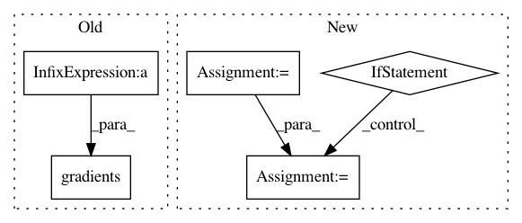

fb43d1f4a64b77f8b64134460b0c77cb5f79e185,t3f/autodiff.py,,hessian_vector_product,#,72
Before Change
left = decompositions.orthogonalize_tt_cores(x)
right = decompositions.orthogonalize_tt_cores(left, left_to_right=False)
vector_projected = riemannian.project(vector, x)
deltas = [right.tt_cores[0]] + [tf.zeros_like(cc) for cc in right.tt_cores[1:]]
x_projection = riemannian.deltas_to_tangent_space(deltas, x, left, right)
cores_grad = tf.gradients(func(x_projection), deltas)
vec_deltas = riemannian.tangent_space_to_deltas(vector_projected)
products = [tf.reduce_sum(a * b) for a, b in zip(cores_grad, vec_deltas)]
grad_times_vec = tf.add_n(products)
second_cores_grad = tf.gradients(grad_times_vec, deltas)
After Change
with tf.name_scope(name, values=all_cores):
left = decompositions.orthogonalize_tt_cores(x)
right = decompositions.orthogonalize_tt_cores(left, left_to_right=False)
deltas = [right.tt_cores[0]]
deltas += [tf.zeros_like(cc) for cc in right.tt_cores[1:]]
x_projection = riemannian.deltas_to_tangent_space(deltas, x, left, right)
function_value = func(x_projection)
if debug:
assert_op = _is_invariant_to_input_transforms(function_value, func(right))
else:
assert_op = None
with tf.control_dependencies([assert_op]):
vector_projected = riemannian.project(vector, x)
cores_grad = tf.gradients(function_value, deltas)
vec_deltas = riemannian.tangent_space_to_deltas(vector_projected)
In pattern: SUPERPATTERN
Frequency: 3
Non-data size: 5
Instances
Project Name: Bihaqo/t3f
Commit Name: fb43d1f4a64b77f8b64134460b0c77cb5f79e185
Time: 2018-10-31
Author: sasha.v.novikov@gmail.com
File Name: t3f/autodiff.py
Class Name:
Method Name: hessian_vector_product
Project Name: Bihaqo/t3f
Commit Name: fb43d1f4a64b77f8b64134460b0c77cb5f79e185
Time: 2018-10-31
Author: sasha.v.novikov@gmail.com
File Name: t3f/autodiff.py
Class Name:
Method Name: gradients
Project Name: chris-chris/pysc2-examples
Commit Name: 48d178cfbb60e5b0004f63b2eca37b2449bb6c67
Time: 2017-10-31
Author: sjhshy@gmail.com
File Name: a2c/a2c.py
Class Name: Model
Method Name: __init__